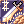
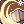

Template:Whitesmith Skills
Jump to navigation
Jump to search
| Skill | Type | Properties | Description |
|---|---|---|---|
| Meltdown | Support |
|
Adds a chance when attacking to destroy the targets Weapon or Armor. If used on a monster it will reduce ATK or DEF instead.
|
| Cart Boost | Support |
|
Increase your movement speed with a cart.
|
| Weapon Refine | Support |
|
Allows you to refine weapons.
After level 50, each Job Level will increase the success rate of refining by 0.5%. (At Job level 70 you will have +10% chance).
A different ores is used depending on the weapon level.
|
|  Maximum Over Thrust | Support |
|
Increase your physical damage at the cost of some zeny.
|
|  Cart Termination | Damage |
|
Strike an enemy with your cart with the chance to stun them, at the cost of some zeny.
|